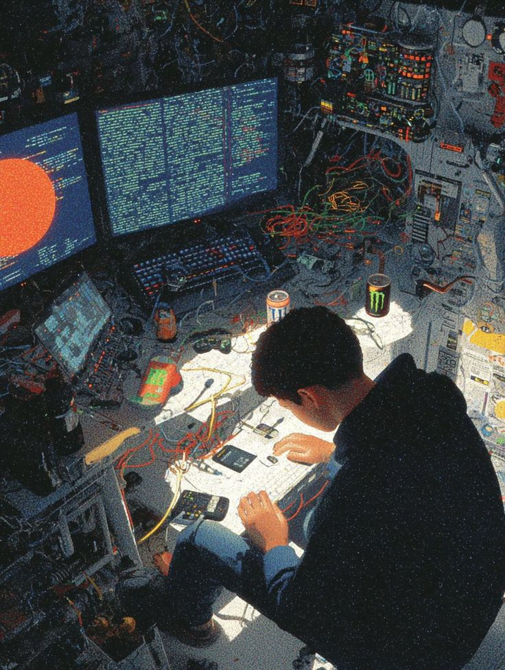

— Available for projects & collabs
Desenvolvedor Web
// 001 — Sobre / About
Sou apaixonado por criação, inovação e evolução. Adoro robótica, informática, marketing, audiovisual e design — praticamente qualquer coisa que me deixe trazer algo ao mundo.
I build things that exist at the intersection of code, hardware, and creativity. From web apps to animatronics.

// 002 — Projetos / Work
App de organização de estudos com estética minimalista japonesa.
Criação, gerenciamento e exportação de currículos — autossuficiente e open source.
Animatronic para interações sociais com crianças portadoras de TEA.
Canal voltado para os Objetivos de Desenvolvimento Sustentável da ONU.
// 003 — Contato / Contact
Aberto a projetos, colaborações e conversas interessantes. Se você tem uma ideia boa — ou estranha — me manda.
Open to projects, collabs and good conversations.